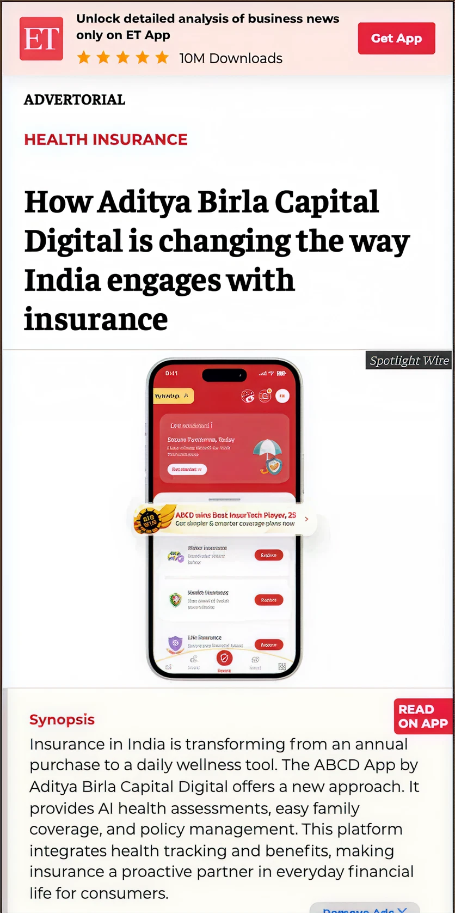
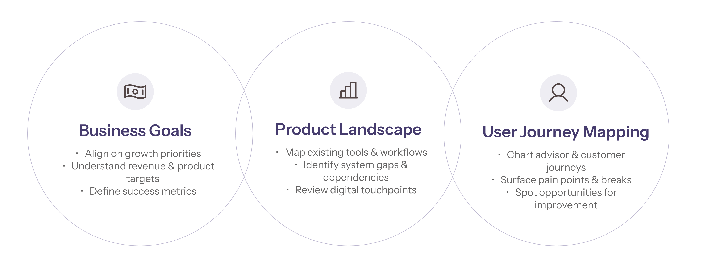

CONTEXT
What is ABSLI?
Aditya Birla Sun Life Insurance (ABSLI), part of Aditya Birla Capital, is one of India’s leading life insurers — ranked 6th nationally and serving 20+ lakh customers across the country.
With a ₹99,000+ crore AUM and a distribution network of 430 branches and 65k+ agents, ABSLI offers protection, savings, investment, and retirement solutions tailored to India’s evolving financial needs.
6th
Ranked nationally among life insurers
20L+
Customers served
₹99K Cr+
Assets under management

PROBLEM
5 apps. 350 backend systems. None talking to each other.
ABSLI’s sales and service ecosystem had become increasingly complex and fragmented. Each sales channel — Banks, Individual Agents, and In-house Teams — used different apps for every stage of the sales journey.
Each sales stage had its own app. Some apps were shared across channels, others were completely isolated. There were 5 primary applications and over 350 backend systems, none of which effectively communicated with each other.
Too many applications
Slow Processing
Lost Customers + Lost Revenue
RESEARCH BRIEF
The research aimed to evaluate whether ABSLI needed a unified app, or a more focused product strategy to streamline workflows and improve efficiency across sales channels.
MY ROLE
My contributions to the research
Facilitated a discovery sprint to align on client goals and research objectives
Planned and developed interview scripts tailored to diverse user groups
Conducted multi-language user interviews — primarily owned the Mysore leg, and assisted with other cities’ sessions
Analyzed and synthesized insights that shaped the final product strategy
DISCOVERY SPRINT
Aligning on the problem before solving it
We began with a structured discovery workshop to align on key business priorities, understand the product ecosystem, and map advisor and customer journeys. This gave us a shared foundation before moving into research.

ABSLI’s STRATEGIC PRIORITIES
Six business objectives that shaped our research direction
We aligned on five core business objectives before fieldwork began — ensuring every interview question mapped back to a real business need.
1
Improve market ranking
Move from 7th to the Top 5 Indian life insurers
2
Grow term insurance penetration
Increase term sales from <5% to 10%
3
Enhance operational efficiency
Improve margins through better processes and digital tooling
4
Optimise product mix
Reduce ULIP share (35%→20%), increase guaranteed plans (60%→70%)
5
Strengthen advisor performance & governance
Upgrade advisor workflows and monitoring systems
6
Uncover insights for digital transformation
Identify pain points and workarounds limiting advisor effectiveness
FROM DISCOVERY TO RESEARCH EXECUTION
34 interviews. 3 cities. 3 languages.
After mapping the product landscape and stakeholder roles, we moved into structured user research. I owned the interview design, led sessions on the ground, and drove the synthesis.
1
Identified key user groups
Mapped advisor roles across Agency, Banca, and Direct channels — understanding how each group’s workflow and incentives differed.
2
Designed tailored interview scripts
Created role-specific question sets to uncover motivations, workflows, and pain points — avoiding generic research that misses nuance.
3
Conducted 34 interviews across 3 cities in 3 languages
Sessions conducted in Hindi, Kannada, and English across Rajkot, Mumbai and Mysore — ensuring inclusive insights that reflected the real diversity of ABSLI’s salesforce.
4
Analysed 17,000+ data points in 3 weeks
Transcribed all 34 interviews and synthesised over 17,000 notes into a coherent set of insights that shaped the final product strategy.
17K+
Data points analysed
34 interviews transcribed and synthesised in 3 weeks — turning raw field notes into a product strategy that moved a 6th-ranked insurer toward its top-5 ambition.
USER INTERVIEWS · KEY THEMES EXPLORED
What we asked and why it mattered
The interviews focused on understanding how stakeholders work today, where they struggle, and how digital tools support — or hinder — their workflows.
Current Usage & Fit
How well ABSLI’s tools align with users’ real workflows and needs
Pain Points
Tasks and stages that are slow, complex, or error-prone in daily workflows
Workarounds
Alternate tools and manual processes used when platforms fall short
Efficiency & Usability
How easily users can complete key responsibilities using existing tools
Cross-Team Collaboration
How well tools support coordination across channels and org levels
Compliance vs Value
Tools used primarily for compliance rather than meaningful user value
Key Insights
Four themes. One root cause.
Every problem we uncovered traced back to the same thing — a fragmented system with no single source of truth. What looked like four separate issues were really four symptoms of the same structural failure.
01
Sales team lack visibility into real-time targets & incentives
Delayed clarity reduces motivation and risks revenue loss
Insight 01
Lack of real-time visibility over current targets results in the team having no clear goals
Sales roles are heavily dependent on MIS reports received from their managers. Low-level agency managers aren’t able to leverage targets to drive more sales.
Only high agency managers track their branch’s performance against competitors — leaving most of the salesforce operating blind.
“Incentive ka live update hota toh zyada acha hota.” (If there was a live incentive update, it would be better.)
Anita — ACRH, Rajkot
“KPI ka list directly humein nahi aata. Chhup ke hai.” (The KPI list isn’t directly available. It’s hidden.)
Kanchan — RO, Mumbai
Insight 02
Lack of clarity on commission payouts and contest progress leads to poor participation and frustration
Contest targets are shared infrequently, leaving sales teams without a roadmap. Commission credit calculations are not easily accessible, making it hard for advisors to track earnings.
In some sales forces, WhatsApp remains the primary channel for contest updates — making tracking inefficient and unreliable.
“Who tracks the old payouts? No one knows when they came, what tax was deducted, or how much was paid.”
Nikunj — Advisor, Rajkot
“In the beginning they aggressively promote the contest, but later there’s no follow-up or feedback.”
Bharath — Advisor, Mysore
02
Governance team lacks visibility over sales and access to the right tools
Leading to excessive manual follow-ups and reduced efficiency
Insight 01
Governance roles have no visibility of their team’s lead progress and policy status
Governance roles don’t get timely updates and resort to logging into Leap via their team’s credentials to check progress of Policy Logging.
Lack of visibility leads to micromanagement — managers repeatedly following up over call just to know where things stand.
“Feel like a beggar to keep on calling them and asking them repeatedly.”
Pragnesh — FLS, Rajkot
“I have 10-20 active advisors and calling all 20 in one day is impossible.”
Nandeep — FLS, Mysore
Insight 02
Governance needs to frequently step in for sales, but lacks the right tools and access
Governance roles fill in for sales teams to log policies on Leap using the sales rep’s credentials. They also track requirements to make sure the sales team is on top of it.
Majority of FLSs are asked for illustrations by their advisors — who send customer details over WhatsApp rather than using the platform.
“Few advisors generate their own presentations. Most ask me to do it for them.”
Chamraj — FLS, Mysore
“I haven’t logged a single application till date.”
Ketan — Advisor, Mumbai
03
Broken underwriting and issuance processes
Leading to delays in turnaround time and loss of business
Insight 01
Lack of reasoning for underwriting requirements leads to back-and-forth with customer teams
Users frequently reach out to CSEs to clarify reasons for rejection or requirements for more details. Sometimes they provide hard copies of documents directly to bypass the requirements process.
This forces Banca channel staff to visit the office in person — since CSEs aren’t always available on call.
“They don’t say what’s wrong with the documents in one go. I had to visit the location at least 4-5 times.”
Gopi — RO, Mysore
“Pata hi nahi chalta hai underwriting me chal kya raha hai.” (You can’t even tell what’s happening in underwriting.)
Varun — RO, Mumbai
Insight 02
Slower-than-competition issuance processes lead to lost business across Banca and Agency channels
Bank SPs prefer companies with quicker issuance speed to meet their targets. They find ABSLI too slow and go to TATA or Max instead.
Particularly with NRI and HNI customers, it’s harder to keep them engaged while waiting for policy issuance.
“ABSLI doing the issuance process slowly is losing them business.”
Salman — SM, Mumbai
“Suppose ek case delay ho gaya, toh branch ne ek Birla ka dhandha gaya.” (If one case gets delayed, the branch loses one Birla deal.)
Yash — RO, Rajkot
04
Digital tools are failing to cater to user requirements
Leading to scattered data and low adoption
Insight 01
Too many apps and lack of integration leads to inefficiencies and poor coordination between teams
Users are forced to log in to multiple apps daily — VYMO for lead tracking, SalesBuddy for illustrations, LEAP for policy logging — with no seamless data transfer between them.
Without a unified system, different teams work with different versions of the truth and begin relying on manual workarounds, leading to errors, confusion, and broken coordination.
“Ek hi app mein sab daal do.” (Put everything in one app.)
Nikunj — Advisor, Rajkot
“I have to constantly remember login IDs and passwords for four different apps.”
Ambadas — FLS, Mumbai
Insight 02
Heavy dependency on workarounds for lead management, renewals and more
Almost all sales agents maintain personal Excel spreadsheets or diaries to track leads. They refer to WhatsApp chat logs to track discussions with leads.
DM channel advisors fear lead reassignment — which causes them to rely on manual tracking systems rather than ABSLI’s official tools.
“If you want to be ahead, you maintain a diary for renewals.”
Yash — RO, Rajkot
“If I lose a lead once, I won’t get it back, so I write everything down.”
Darshan — DSE, Rajkot
RESULT
34 interviews. 17,000+ data points. One clear direction.
Every insight pointed to the same structural failure — a fragmented ecosystem where no single tool served as a source of truth, and advisors had no choice but to work around the system rather than with it.
“Our research confirmed that a unified digital ecosystem was the right direction — one that all advisors were already asking for, in three different languages.”
Building on these insights, we proposed a phased product strategy that accounted for all technical constraints and regulatory requirements. The strategy is currently in active development.
NDA Notice
The specifics of the proposed strategy are under NDA and cannot be disclosed. What I can share: the research shaped a clear, phased direction for unifying ABSLI’s sales ecosystem — one that is currently being built.
REFLECTIONS
What this project taught me
Conducting research in three languages across three cities taught me how much nuance gets lost in translation — and how much richer insights become when you meet users on their own terms.
Synthesising 17,000+ data points in 3 weeks was a test of speed and rigour. I learned to distinguish signal from noise fast — and to let the patterns speak rather than forcing a narrative.
The discovery sprint before fieldwork was the most underrated part of the project. Aligning stakeholders on the problem before jumping to solutions saved weeks of misaligned research.
Every user — from a field agent in Rajkot to a branch manager in Mumbai — was already telling us the answer. The job was just to listen well enough to hear it.